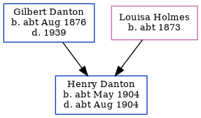

Henry Thomas Danton cMay 1904 - c1904
[ Home ] | [ Calendar ] | [ Surnames Index ] | [ Errors ] | [ Family History ]The child of Gilbert Danton and Louisa Holmes, Henry Danton, the second cousin once-removed on the father's side of Nigel Horne, was born in Ramsgate, Kent, England c. May 19041,2,3,4 and baptised there at St Luke's Church on 12 May 1904.
He died c. Aug 1904 in Thanet, Kent, England2,4 (jul/Aug/Sep).
Parents
- Gilbert Edmund was born c. Aug 1876
- Louisa Mary was born c. 1873
Citations
- England & Wales births 1837-2006 - Findmypast
- England & Wales deaths 1837-2007 - Findmypast
- England & Wales, FreeBMD Birth Index, 1837-1915 Online publication - Provo, UT, USA: The Generations Network, Inc., 2006.Original data - General Register Office. England and Wales Civil Registration Indexes. London, England: General Register Office. © Crown copyright. Published by permission of the Cont
- England & Wales, FreeBMD Death Index: 1837-1915 Online publication - Provo, UT, USA: The Generations Network, Inc., 2006.Original data - General Register Office. England and Wales Civil Registration Indexes. London, England: General Register Office. © Crown copyright. Published by permission of the Cont
Media
England & Wales deaths 1837-2007 - BMD/D/1904/3/AZ/000088/166
England & Wales births 1837-2006 - BMD/B/1904/2/AZ/000152/073
Family Tree
Map
Generated by ged2site. Last updated on Jul 3, 2024